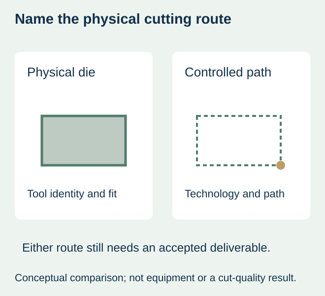
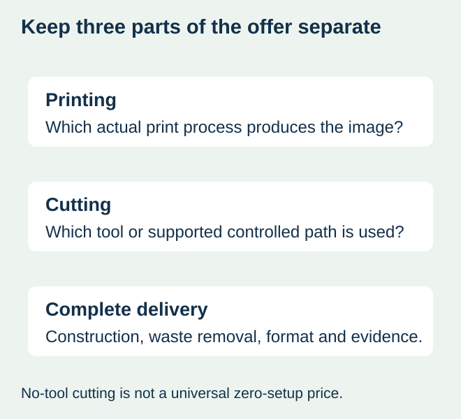

A food brand asks for a small run of custom-shaped jar labels and receives a digitally printed proposal. The buyer assumes that a physical cutting tool is unnecessary. Another offer says no tooling, and the buyer assumes that no preparation cost can apply. Neither phrase yet identifies the complete cutting job.
Separate the printing route from the physical cutting route, then compare complete supported proposals. Digital printing does not by itself establish digital cutting. An option without a physical die can still involve file preparation, material review, job setup, waste removal and inspection. Ask which steps and charges the supplier actually includes.


What changes when the cut is digitally controlled?
A mechanical die uses a physical cutting tool for the agreed shape. A digitally controlled cutting system follows an approved path using its particular technology. These are broad distinctions, not a claim that every converter offers both or that all forms of digital cutting behave alike.
A B Graphic International’s DigiLase description gives a laser-cutting example intended for short runs without hard tooling. The manufacturer also identifies material and shape as inputs to its system. This demonstrates an industry route; it does not establish this site’s equipment, supported materials, minimum order, changeover time or production performance.
Compare the same construction and delivered label
| Question | Mechanical-die proposal | Digitally controlled cutting proposal |
|---|---|---|
| Shape identity | Existing or newly prepared tool matched to the actual revision | Approved path and the actual cutting technology |
| Preparation | Confirmed tool suitability, new-tool and setup scope | Confirmed file, material and setup scope |
| Construction | Actual face, adhesive, liner and finish | The same requirement or a disclosed alternative |
| Delivered format | Agreed cut, waste removal, winding or sheet output | The same deliverable, not only a cut demonstration |
| Next change | Which physical tool can be reused or replaced? | Which path/material review and preparation recur? |
| Evidence | Representative converted sample | Representative sample from the offered cutting route |


Use shape stability to frame the quotation request
If the outline is stable and a compatible tool already exists, request the actual reuse proposal before assuming another route saves money. A paid tool from a different converter is not automatically available or technically compatible. The tooling-handover guide separates rights, access and usability.
If several short runs use changing outlines, a supported digitally controlled route is worth comparing with the proposed tooling and preparation for those actual shapes. Ask for the sequence of jobs you expect, not only the price of one attractive sample. The result still depends on confirmed material compatibility, output and commercial terms; no route is universally cheapest for small quantities.
If the supplier offers only one practical route, compare that disclosed proposal with a simpler accepted shape or another confirmed supply option. Do not write a production plan around a technology mentioned in a brochure but absent from the actual offer.
A cut outline is only part of the production evidence
Ask whether the sample represents the same cutting route, construction and finished format as the order. A hand-cut mockup can help check size on a food jar, but it does not represent the converted web. A detached label also leaves the liner and surrounding waste outside the view.
Inspect the relevant cut edge, shape, print-to-cut relationship and liner under the agreed review. Have the converter explain which observations matter for the supplied construction and intended application. This article supplies no universal edge tolerance, cutting power, speed or minimum feature size. Do not infer package suitability merely because a complex contour was produced once.
The matrix-removal guide handles whether the surrounding waste and internal cutouts can be managed. The cut-path guide handles geometry and artwork near the edge. Choosing a cutting route does not replace either decision.
Price the whole plan and keep changes identifiable
List the confirmed preparation, cutting, finishing and output in each quotation, including what repeats when the shape or construction changes. If the physical tool is absent, do not automatically enter zero in every setup line. If a tool is reused, do not automatically assume the entire job has no preparation cost.
For a hypothetical bakery promotion, the buyer may compare one stable rounded outline across versions with several separate decorative shapes. Keep the artwork count and shape count distinct. A supported common outline can simplify the proposal, but the actual supplier must explain its effect; no percentage saving or free tooling is asserted.
Release the chosen route, cut-path revision, construction, sample boundary and delivered format together. A later route substitution should be disclosed before the earlier sample is treated as approval of a physically different process.
Discuss the unresolved label requirement
Send the dimensioned cut path and revision, food package, complete construction if known, quantity per shape/artwork and delivered roll or sheet requirements. Identify any existing tool and ask which cutting route and representative sample are actually offered. Review the food-label product scope and prepare a label specification inquiry. The contact page opens an email draft and lists email or WhatsApp for attachments. Supply, proof options, testing, pricing and timing require project confirmation.